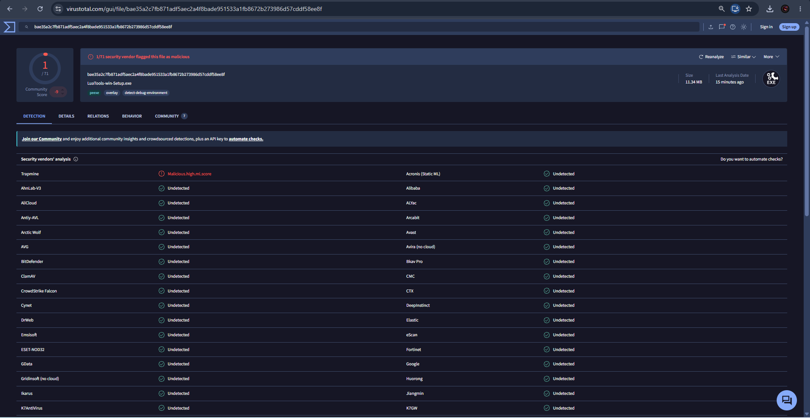

Lua Tools

Herramienta liviana diseñada para desbloquear y gestionar juegos/DLCs en Steam de forma rápida (podes meter parches y jugar en online en juegos de empresas pequeñas). Esto solo te permite descargar el juego y jugar en ese dispositivo, no significa que sea tuyo y puedas jugar en cualquier pc.
⚠️️ ADVERTENCIA: El uso de esta herramienta conlleva riesgo de baneos en Steam. Se recomienda encarecidamente utilizar una cuenta secundaria para evitar cualquier sanción en tu cuenta principal.

Verificado con VirusTotal — 1 falso positivo
Descargar
Volver a inicio